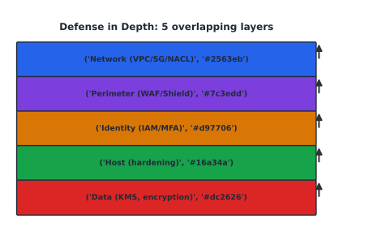

Cloud Security Administration#
Learning Objectives#
Apply the CIA security principles.
Build Defense in Depth.
Understand cryptography (symmetric/asymmetric, hashing, TLS).
Apply Risk Management.
Administer AWS KMS, Secrets Manager, GuardDuty, AWS WAF.
Information Security (CIA)#
Letter |
Goal |
Typical control |
|---|---|---|
Confidentiality |
keep secrets secret |
encryption, IAM |
Integrity |
data not altered |
signatures, checksums |
Availability |
system works |
redundancy, patches |
Plus authentication (“prove identity”), authorization (“decide rights”), accounting (“who did what”), and non-repudiation (can’t deny an action — signatures).
Lifecycle: Assess risk → design controls → implement (least privilege, encryption, logging) → detect → respond/recover.
Defense in Depth#
Layered controls so a single bypass doesn’t compromise everything.
{kind=link}

Fig. 18 Five overlapping security layers: network, perimeter, identity, host, data.#
Layer |
AWS controls |
|---|---|
Network |
VPC, Subnets, SG, NACL |
Perimeter |
WAF, Shield |
Identity |
IAM, SSO, MFA |
Host |
SSM hardening, Inspector |
Data |
KMS/SSE, S3 policies |
Tip
Defense-in-depth overlaps with Zero Trust: verify every request (identity, device, context).
Cryptography#
Type |
Property |
AWS service |
|---|---|---|
Symmetric (AES-256) |
same key encrypt+decrypt; fast |
SSE-KMS, SSE-C |
Asymmetric (RSA/ECC) |
public/private key pair; signatures |
KMS (asymmetric CMKs) |
Hash (SHA-256) |
one-way; fixed digest; collision-resistant |
integrity (S3 ETag, git) |
TLS handshake (essence)#
ClientHello -> ServerHello + Certificate -> (key exchange) -> Finished (both)
Then a symmetric session key encrypts the channel; HMAC protects each record.
AWS Certificate Manager manages the certs (Ch 9); AWS KMS manages the keys (below).
Risk Management#
Steps: identify assets/threats/vulnerabilities → assess (High/Med/Low or $) → treat (mitigate / accept / transfer / avoid) → monitor.
Example: an EC2 host with public SSH + password auth has high likelihood of being attacked; mitigation: disable passwords, restrict source IPs, enable GuardDuty.
AWS KMS (Key Management Service)#
KMS creates, controls, and audits encryption keys (symmetric and asymmetric).
Customer Master Key (CMK) protects data keys; you never see the master plaintext.
Envelope encryption: app gets a data key (via KMS), encrypts data locally, stores the encrypted data key alongside.
Alias (
alias/myapp) friendly name; key policy + IAM must both allow.AWS-managed (
aws/s3) vs. customer-managed CMKs vs. CloudHSM (FIPS appliances).
aws kms generate-data-key --key-id alias/myapp --key-spec AES_256
Secrets Manager & GuardDuty & WAF#
Secrets Manager#
Stores secrets with auto-rotation (e.g., rotate RDS passwords via Lambda).
vs. Parameter Store: choose Secrets Manager for rotation/auto-rotation of credentials, Parameter Store (cheaper) for non-secret config.
GuardDuty#
Agentless threat detection from VPC flow logs + CloudTrail + DNS logs.
Detects compromised keys, cryptomining, port scans, IAM anomalies.
Findings feed Security Hub; wire to an SNS topic for auto-remediation.
AWS WAF#
Rules on CloudFront/ALB: rate-limit, AWSManagedRulesCommonRuleSet (XSS/SQLi), geo-match, Bot Control.
Checkpoint#
Q1. Name the three legs of the CIA triad and give one control each.
Answer. Confidentiality (encryption/IAM); Integrity (signatures/checksums); Availability (redundancy/patches).
Q2. In envelope encryption, who holds the CMK and who holds the data key?
Answer. KMS holds/guards the CMK; your app receives and uses an ephemeral data key locally to encrypt data.
Q3. Why is a Security Group ‘stateful’ and how does that simplify rules?
Answer. SG state tracks connections: if outbound is allowed, the return inbound is auto-allowed, so you need no explicit ingress rule for return traffic.
Q4. Under Risk = Likelihood x Impact, what does an explicit ‘Deny’ in IAM reduce?
Answer. It reduces Likelihood to zero for that specific action/resource combination, regardless of other allows.
Q5. What two signals let GuardDuty detect a likely compromised EC2 instance, with no agent?
Answer. VPC flow logs (unusual traffic/outbound to known-bad IPs) and CloudTrail events (credential/API anomalies) — both natively ingested.
Sources#
The concepts in this chapter are summarized from the following authoritative sources:
NIST SP 800-53 security controls: https://csrc.nist.gov/publications/detail/sp/800-53/rev-5/final
AWS KMS Developer Guide: https://docs.aws.amazon.com/kms/latest/developerguide/
AWS Secrets Manager User Guide: https://docs.aws.amazon.com/secretsmanager/latest/userguide/
Amazon GuardDuty User Guide: https://docs.aws.amazon.com/guardduty/latest/ug/
AWS WAF developer guide: https://docs.aws.amazon.com/waf/latest/developerguide/